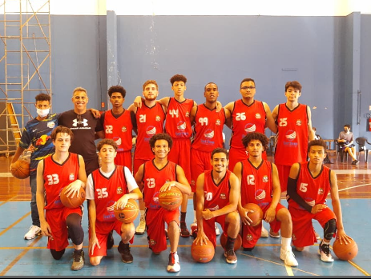

Meu nome é Gabriel, atualmente em 9/23 tenho 19 anos, gosto bastante de ler e estudar(estou lendo um livro sobre o nosso comportamento. Comporte-se - Robert M. Sapolsky). Estou entrando no mundo da tecnologia e está sendo muito diferente, print pra cá, div pra lá, mas estou gostando, isso que importa no momento.
Desde pequeno fiz tudo o que apareceu de novo, fanfarra, teatro, circo, taekwondo, basquete, vôlei, futebol, futsal e até rúgbi. Sempre mostrei vontade quando fazia as coisas(isso não muda até hoje), às vezes deixava de estudar para ir pra fanfarra ou jogar basquete na praça, vivia ligado no 220. Hoje ainda continuo com o hábito de tocar alguma coisa, estou só no teclado por enquanto pra logo ir pro violão. Hoje eu não jogo mais basquete, mas não deixo de praticar atividade física, na verdade, se eu não praticar nada eu começo a ficar doente, me sinto mal. O que 'substitui' o basquete é a corrida e a academia, coloco o fone e tchau. Atualmente estou numa fase de autoconhecimento, não só no aspecto da corrida, mas em todo o contexto da vida, aprendendo muita coisa a cada dia, sobre o mundo e mim mesmo. Até esqueci de comentar, recentemente comecei a fazer jiu-jitsu também, estou aprendendo a gostar de apanhar, soa meio estranho mas tudo bem hahaha.
Pós-treino Jiu-Jitsu
Foto pré-jogo na Liga Metropolitana de basquete (sou o número 15)
Campeonato de volei com a JOY
Em meados de 2018 e 19, conheci um grupo que se chama Joy, pra deixar claro, é um grupo e não uma igreja, de missionários que levam a palavra de Deus para jovens e adolescentes, a qual, conheci em uma aula de vôlei, acho isso bem interessante, na verdade, fico pensando, tem que ser Deus mesmo. Hoje sou voluntário/liderança, ajudando a equipe a montar eventos, fazer discipulados, contribuir com alguma coisa, etc. Creio que esse é um lugar onde eu quero que mais jovens tenham contato, pois a forma como eu vi o quão longe eu estava de Deus e para onde uma vida de pecado iria me levar, me vez aceitar a Cristo, não pela vida que ele poderia me dar, mas pelo o que ele fez por nós, isso em 2019. Tenho uma gratidão genuína por tudo o que fizeram.